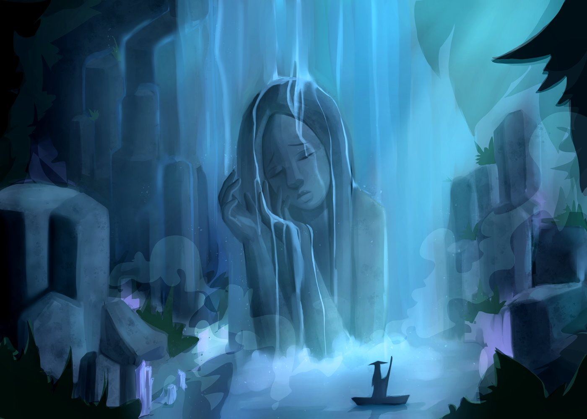

Espíritu de la cascada
Una cascada que toma forma de mujer y mira con tristeza a un viajero que pasa en una pequeña barca.
Sobre la ilustración
En el centro, el agua cae y forma el rostro, el cabello y la mano de una figura que parece cansada o melancólica. Las gotas escurren por sus dedos como si fueran lágrimas.
Al frente, una silueta diminuta con sombrero en forma de cono va en una barca. Ese cambio de tamaño hace que el espíritu se vea enorme y que la escena cuente una historia sin necesidad de texto.
Técnica usada
Es una pintura digital de pinceladas suaves y casi toda en una sola gama de color. Lo principal fue esto:
- Una paleta casi monocromática de azules y turquesas, con toques de lila en los cristales.
- Niebla hecha con formas semitransparentes que se acumulan al pie de la cascada.
- Hojas y rocas oscuras en los bordes, que funcionan como un marco y dirigen la vista al centro.
- Líneas de luz muy finas sobre el cabello y la mano para mostrar el agua que corre.